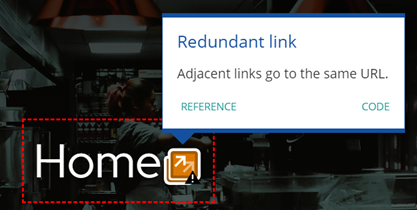

Det ble bruktWAVE for å teste koden sin brukervennlighet. Gjennom denne nettsiden WAVE var en ting som gikk igjen, det var kontraster på siden. Siden websiden har en mørk bakgrunn, er det viktig med en klar kontrast mellom bakgrunnen og teksten. Sett på den tidligere meny-siden var kontrasten mellom rød pris, og mørk bakgrunn for liten. Fargen som ble valgt var en farge som ga websiden en bedre score, men samtidig løftet det websiden med farger som var mer lik bildene av matrettene.
Home-siden fikk opp en forbedring. Websiden har to lenker som tar brukeren til samme side. Det kan være til bry for tastatur- og skjermbrukere. Det er ikke ønskelig å fjernes siden de fleste websider har en logo med en «hjem-funksjon».
Sidens språk er satt til norsk, dermed skal personer som er blinde eller har lesevansker ha mulighet til å kunne navigere seg rundt på siden med hjelp av nettleserens opplesnings-funksjon.
«Header» har seks knapper, to til indeks-siden, en til meny, en til topical page og en til accessibility page. Det er en animasjon under hvert tekstelement, for å vise hvor musepekeren er på skjermen og for å vise hva brukeren klikker seg inn på. Headeren er også skalert til mindre skjermer ved å gå under hverandre, for å gjøre det enkelt å navigere seg på siden.
«Footer» er delt i to kolonner, en med åpningstider og en med kontaktinformasjon.
Selve footeren er lik på alle sider, dette er for å gjøre det enkelt å se åpningstider
og for å gjøre det enkelt å ta kontakt med restauranten. Det er i tillegg tre lenker,
en for å ringe, en for å sende e-post og en for å finne stedet.
Indeks-siden har en animasjon på hver boks når musepekeren er over.
Dette er for å gjøre det enkelt å se hva brukeren skulle klikke seg inn på.
I tillegg skal bakgrunnsbildene gi et likt tema som teksten.
Booking-siden har på større skjermer to bilder av et langbord, men skal ikke vises på mindre skjermer.
Her vil brukeren få med seg det viktigste på siden gjennom ord som har en understrek og tjukke bokstaver.
Dette er for å gjøre det lettere å lese og for å få et blikkfang på siden.
Menysiden har et oppsett, hvor det vil være tre retter i bredden på større skjermer og to eller en for mindre skjermer.
Det skal være et klart skille mellom lunsj, middag og dessert.
Websiden har ikoner med forskjellige allergener, fremfor tekst.
Dette for å gjøre siden mer visuelt attraktiv enn andre menysider.
Bildene skal illustrere matretten som blir servert på restauranten.
Topcial-siden skal ha to bilder, men avhengig av hvilken skjerm du ser på, vil du kun få opp et av dem.
Teksten er satt opp på en slik måte at det skal se ut som en artikkel, med kilder og lenker på siden.
Lenkene skal kunne ta brukeren til aktuelle nøkkelord på nettet.